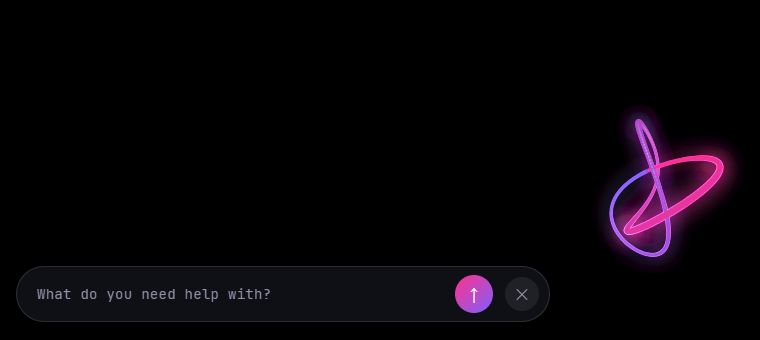
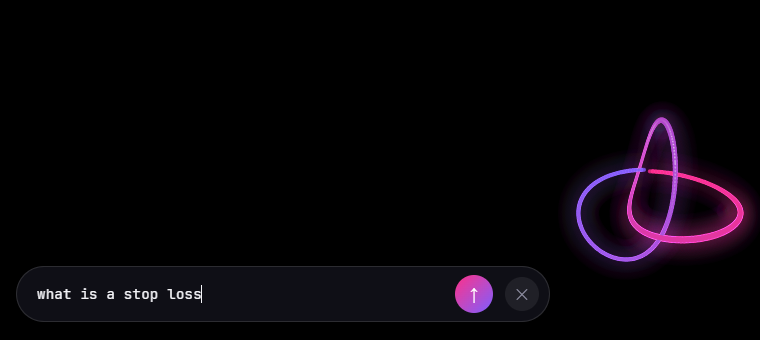
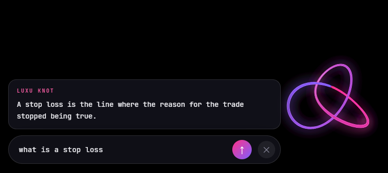

One file · 71 MB · Windows 10/11 64-bit · nothing to install · no account
What it looks like

At rest — closed, turning slowly. A trefoil: the simplest knot
that cannot be pulled undone. Its crossings are drawn in depth order, so the
strand behind really does pass under.

Listening — start typing and it comes undone from the tail
forward, into one open thread whose tip lands on what you are typing.

Answering — it ties itself back up, and one bright wave runs
the length of the ribbon carrying the answer.
What it does, and what it will never do
It does
Answer questions, on top of any window. Alt + Space to summon (Ctrl+Alt+K also works). It sits in the bottom-right corner.
Remember what you tell it to remember, in a plain JSON file on your own machine that you can open and edit.
Answer the time, the date and arithmetic instantly — by a parser, with nothing leaving the computer.
Forget, when you say forget.
Live in the tray. Close it and it is gone; there is no service and no startup entry.
It never
Runs a command on your machine. It answers; it does not act. Something that cannot run a command cannot be talked into running one.
Remembers anything you did not type. Nothing it reads — no page, no file, no reply — can write to its memory.
Sends a sensitive value anywhere. A password or key is kept on your disk and the model is told only that one exists.
Carries a vendor AI library inside it. There is no API key in this file.
Installs anything, or asks you to sign in.
Before you run it
This file is not code-signed yet, so Windows SmartScreen will warn you
once: More info → Run anyway. That warning means "nobody paid for a
certificate", not "this is unsafe" — and you should treat every unsigned download that
way, including this one. The checksum below is how you verify you got the same file
that was published. In PowerShell:
Get-FileHash .\LUXU-KNOT-Portable.exe